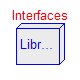
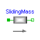
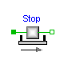
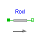
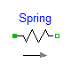
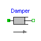
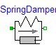
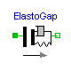
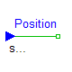
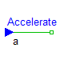
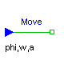
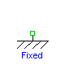
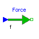
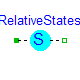
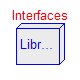
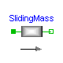
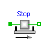
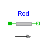
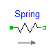
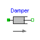
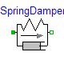
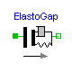
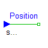
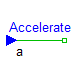
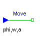
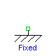
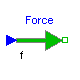
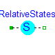
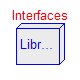
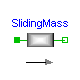
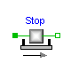
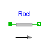
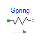
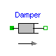
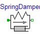
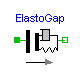
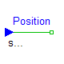
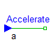
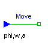
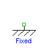
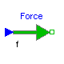
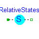
This package contains components to model 1-dimensional translational mechanical systems.
The filled and non-filled green squares at the left and right side of a component represent mechanical flanges. Drawing a line between such squares means that the corresponding flanges are rigidly attached to each other. The components of this library can be usually connected together in an arbitrary way. E.g. it is possible to connect two springs or two sliding masses with inertia directly together.
The only connection restriction is that the Coulomb friction elements (Stop) should be only connected together provided a compliant element, such as a spring, is in between. The reason is that otherwise the frictional force is not uniquely defined if the elements are stuck at the same time instant (i.e., there does not exist a unique solution) and some simulation systems may not be able to handle this situation, since this leads to a singularity during simulation. It can only be resolved in a "clean way" by combining the two connected friction elements into one component and resolving the ambiguity of the frictional force in the stuck mode.
Another restriction arises if the hard stops in model Stop are used, i. e. the movement of the mass is limited by a stop at smax or smin. This requires the states Stop.s and Stop.v . If these states are eliminated during the index reduction the model will not work. To avoid this any inertias should be connected via springs to the Stop element, other sliding masses, dampers or hydraulic chambers must be avoided.
In the icon of every component an arrow is displayed in grey color. This arrow characterizes the coordinate system in which the vectors of the component are resolved. It is directed into the positive translational direction (in the mathematical sense). In the flanges of a component, a coordinate system is rigidly attached to the flange. It is called flange frame and is directed in parallel to the component coordinate system. As a result, e.g., the positive cut-force of a "left" flange (flange_a) is directed into the flange, whereas the positive cut-force of a "right" flange (flange_b) is directed out of the flange. A flange is described by a Modelica connector containing the following variables:
SIunits.Position s "absolute position of flange"; flow Force f "cut-force in the flange";
This package contains the following model components:
Interfaces Sublibrary containing interface definitions.
Examples Examples of library usage.
SlidingMass Translational component with inertia.
Stop Sliding mass with Coulomb friction and hard stops.
Rod Massless rod.
Spring Linear spring.
Damper Linear damper.
SpringDamper Linear spring and linear damper in parallel connection.
ElastoGap Linear spring and linear damper that can lift off.
Position Drive a flange with a reference position given as input signal.
Accelerate Drive a flange with an acceleration given as input signal.
Move Drive a flange with a reference position, velocity and
acceleration given as input signal.
Fixed Fixed flange at a predefined position.
Force External force defined as input signal.
ForceSensor Ideal sensor to measure the force in a flange.
PositionSensor Ideal sensor to measure absolute position of a flange.
SpeedSensor Ideal sensor to measure absolute velocity of a flange.
AccSensor Ideal sensor to measure absolute acceleration of a flange.
This library is designed in a fully object oriented way in order that components can be connected together in every meaningful combination (e.g. direct connection of two springs or two shafts with inertia). As a consequence, most models lead to a system of differential-algebraic equations of index 3 (= constraint equations have to be differentiated twice in order to arrive at a state space representation) and the Modelica translator or the simulator has to cope with this system representation. According to our present knowledge, this requires that the Modelica translator is able to symbolically differentiate equations (otherwise it is e.g. not possible to provide consistent initial conditions; even if consistent initial conditions are present, most numerical DAE integrators can cope at most with index 2 DAEs).
Main Author:Release Notes:
Copyright © 2000-2002, Modelica Association and Universität Paderborn, FB 12.
The Modelica package is free software; it can be redistributed and/or modified under the terms of the Modelica license , see the license conditions and the accompanying disclaimer in the documentation of package Modelica in file "Modelica/package.mo".
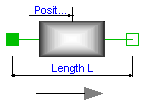
Sliding mass with inertia, without friction and two rigidly connected flanges.
The sliding mass has the length L, the position coordinate s is in the middle. Sign convention: A positive force at flange flange_a moves the sliding mass in the positive direction. A negative force at flange flange_a moves the sliding mass to the negative direction.
Release Notes:
| Name | Default | Description |
|---|---|---|
| L | 0 | length of component from left flange to right flange (= flange_b.s - flange_a.s) [m] |
| m | 1 | mass of the sliding mass [kg] |
model SlidingMass "Sliding mass with inertia" extends Interfaces.Rigid; parameter SI.Mass m=1 "mass of the sliding mass"; SI.Velocity v "absolute velocity of component"; SI.Acceleration a "absolute acceleration of component"; equation v = der(s); a = der(v); m*a = flange_a.f + flange_b.f; end SlidingMass;
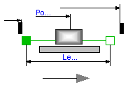
This element describes the Stribeck friction characteristics of a sliding mass,
i. e. the frictional force acting between the sliding mass and the support. Included is a
hard stop for the position.
The surface is fixed and there is friction between sliding mass and surface.
The frictional force f is given for positive velocity v by:

There are hard stops at smax and smin, i. e. if
flange_a.s >= smin
the sliding mass can move freely. and
flange_b.s <= xmax
When the absolute velocity becomes zero, the sliding mass becomes stuck, i.e., the absolute position remains constant. In this phase the friction force is calculated from a force balance due to the requirement that the absolute acceleration shall be zero. The elements begin to slide when the friction force exceeds a threshold value, called the maximum static friction force, computed via:
For more details of the used friction model see the following reference:
Beater P. (1999):
The friction model is implemented in a "clean" way by state events and leads to continuous/discrete systems of equations which have to be solved by appropriate numerical methods. The method is described in:
More precise friction models take into account the elasticity of the material when the two elements are "stuck", as well as other effects, like hysteresis. This has the advantage that the friction element can be completely described by a differential equation without events. The drawback is that the system becomes stiff (about 10-20 times slower simulation) and that more material constants have to be supplied which requires more sophisticated identification. For more details, see the following references, especially (Armstrong and Canudas de Witt 1996):
Release Notes:
| Name | Default | Description |
|---|---|---|
| L | 0 | length of component from left flange to right flange (= flange_b.s - flange_a.s) [m] |
| smax | 25 | right stop for (right end of) sliding mass [m] |
| smin | -25 | left stop for (left end of) sliding mass [m] |
| v_small | 1e-3 | Relative velocity near to zero (see model info text) [m/s] |
| m | 1 | mass [kg] |
| F_prop | 1 | velocity dependent friction [N/ (m/s)] |
| F_Coulomb | 5 | constant friction: Coulomb force [N] |
| F_Stribeck | 10 | Stribeck effect [N] |
| fexp | 2 | exponential decay [1/ (m/s)] |
model Stop "Sliding mass with hard stop and Stribeck friction"
extends Modelica.Mechanics.Translational.Interfaces.FrictionBase(s(stateSelect=
StateSelect.always));
Modelica.SIunits.Velocity v(stateSelect=StateSelect.always)
"Absolute velocity of flange_a and flange_b";
Modelica.SIunits.Acceleration a
"Absolute acceleration of flange_a and flange_b";
parameter Modelica.SIunits.Mass m=1 "mass";
parameter Real F_prop(
final unit="N/ (m/s)",
final min=0) = 1 "velocity dependent friction";
parameter Modelica.SIunits.Force F_Coulomb=5 "constant friction: Coulomb force";
parameter Modelica.SIunits.Force F_Stribeck=10 "Stribeck effect";
parameter Real fexp(
final unit="1/ (m/s)",
final min=0) = 2 "exponential decay";
equation
// Constant auxiliary variables
f0 = (F_Coulomb + F_Stribeck);
f0_max = f0*1.001;
free = f0 <= 0 and F_prop <= 0 and s > smin + L/2 and s < smax - L/2;
// Velocity and acceleration of flanges
v = der(s);
a = der(v);
v_relfric = v;
a_relfric = a;
// Equilibrium of forces
0 = flange_a.f + flange_b.f - f - m*der(v);
// Friction force
f = if locked then sa else if free then 0 else (if startForward then F_prop*v
+ F_Coulomb + F_Stribeck else if startBackward then F_prop*v - F_Coulomb
- F_Stribeck else if pre(mode) == Forward then F_prop*v + F_Coulomb +
F_Stribeck*exp(-fexp*abs(v)) else F_prop*v - F_Coulomb - F_Stribeck*exp(-
fexp*abs(v)));
// Define events for hard stops and reinitiliaze the state variables velocity v and position s
algorithm
when (initial()) then
assert(s > smin + L/2 or s >= smin + L/2 and v >= 0,
"Error in initialization of hard stop. (s - L/2) must be >= smin ");
assert(s < smax - L/2 or s <= smax - L/2 and v <= 0,
"Error in initialization of hard stop. (s + L/2) must be <= smax ");
end when;
when not (s < smax - L/2) then
reinit(s, smax - L/2);
if (not initial() or v > 0) then
reinit(v, 0);
end if;
end when;
when not (s > smin + L/2) then
reinit(s, smin + L/2);
if (not initial() or v < 0) then
reinit(v, 0);
end if;
end when;
end Stop;
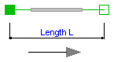
Rod without inertia and two rigidly connected flanges.
Release Notes:
| Name | Default | Description |
|---|---|---|
| L | 0 | length of component from left flange to right flange (= flange_b.s - flange_a.s) [m] |
model Rod "Rod without inertia" extends Interfaces.Rigid; equation 0 = flange_a.f + flange_b.f; end Rod;
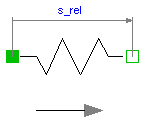
A linear 1D translational spring. The component can be connected either between two sliding masses, or between a sliding mass and the housing (components FixedLeft, FixedRight), to describe a coupling of the slidin mass with the housing via a spring.
Release Notes:
| Name | Default | Description |
|---|---|---|
| s_rel0 | 0 | unstretched spring length [m] |
| c | 1 | spring constant [N/m] |
model Spring "Linear 1D translational spring"
extends Interfaces.Compliant;
parameter SI.Distance s_rel0=0 "unstretched spring length";
parameter Real c(
final unit="N/m",
final min=0) = 1 "spring constant ";
equation
f = c*(s_rel - s_rel0);
end Spring;
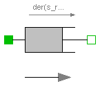
Linear, velocity dependent damper element. It can be either connected between a sliding mass and the housing (FixedLeft, FixedRight elements), or between two sliding masses.
Release Notes:
| Name | Default | Description |
|---|---|---|
| d | 0 | damping constant [N/ (m/s)] [N/ (m/s)] |
model Damper "Linear 1D translational damper"
extends Interfaces.Compliant;
parameter Real d(
final unit="N/ (m/s)",
final min=0) = 0 "damping constant [N/ (m/s)]";
SI.Velocity v_rel "relative velocity between flange L and R";
equation
v_rel = der(s_rel);
f = d*v_rel;
end Damper;
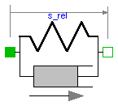
A spring and damper element connected in parallel. The component can be connected either between two sliding masses to describe the elasticity and damping, or between a sliding mass and the housing (FixedLeft, FixedRight elements), to describe a coupling of the sliding mass with the housing via a spring/damper.
Release Notes:
| Name | Default | Description |
|---|---|---|
| s_rel0 | 0 | unstretched spring length [m] |
| c | 1 | spring constant [N/m] |
| d | 1 | damping constant [N/(m/s)] |
model SpringDamper
"Linear 1D translational spring and damper in parallel"
extends Interfaces.Compliant;
parameter SI.Position s_rel0=0 "unstretched spring length";
parameter Real c(
final unit="N/m",
final min=0) = 1 "spring constant";
parameter Real d(
final unit="N/(m/s)",
final min=0) = 1 "damping constant";
SI.Velocity v_rel "relative velocity between flange L and R";
equation
v_rel = der(s_rel);
f = c*(s_rel - s_rel0) + d*v_rel;
end SpringDamper;
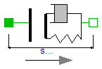
A linear translational spring damper combination that can lift off. The component can be connected between between a sliding mass and the housing (components FixedLeft, FixedRight), to describe the contact of a sliding mass with the housing.
Release Notes:
| Name | Default | Description |
|---|---|---|
| s_rel0 | 0 | unstretched spring length [m] |
| c | 1 | spring constant [N/m] |
| d | 1 | damping constant [N/ (m/s)] |
model ElastoGap "1D translational spring damper combination with gap"
extends Interfaces.Compliant;
parameter SI.Position s_rel0=0 "unstretched spring length";
parameter Real c(
final unit="N/m",
final min=0) = 1 "spring constant";
parameter Real d(
final unit="N/ (m/s)",
final min=0) = 1 "damping constant";
SI.Velocity v_rel "relative velocity between flange L and R";
Boolean Contact "false, if s_rel > l ";
equation
v_rel = der(s_rel);
Contact = s_rel < s_rel0;
f = if Contact then (c*(s_rel - s_rel0) + d*v_rel) else 0;
end ElastoGap;
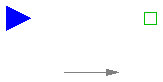
The input signal inPort.signal[1] defines the reference position s_ref in [m]. Flange flange_b is forced to move according to this reference motion. According to parameter exact (default = false), this is done in the following way:
The input signal can be provided from one of the signal generator blocks of the block library Modelica.Blocks.Sources.
Release Notes:
| Name | Default | Description |
|---|---|---|
| exact | false | true/false exact treatment/filtering the input signal |
| f_crit | 50 | if exact=false, critical frequency of filter to filter input signal [Hz] |
model Position
"Forced movement of a flange according to a reference position"
parameter Boolean exact=false
"true/false exact treatment/filtering the input signal";
parameter SI.Frequency f_crit=50
"if exact=false, critical frequency of filter to filter input signal";
output SI.Position s_ref "reference position defined with the input signal";
output SI.Position s "absolute position of flange_b";
output SI.Velocity v "absolute velocity of flange_b";
output SI.Acceleration a "absolute acceleration of flange_b";
protected
parameter Real w_crit=2*Modelica.Constants.pi*f_crit
"critical frequency in [1/s]";
constant Real af=1.3617 "s coefficient of Bessel filter";
constant Real bf=0.6180 "s*s coefficient of Bessel filter";
public
Interfaces.Flange_b flange_b;
Modelica.Blocks.Interfaces.InPort inPort(final n=1)
"Flange position as input signal";
equation
s_ref = inPort.signal[1];
s = flange_b.s;
v = der(s);
a = der(v);
if exact then
s = s_ref;
else
// Filter: a = s_ref/(1 + (af/w_crit)*S + (bf/w_crit^2)*S^2)
a = ((s_ref - s)*w_crit - af*v)*(w_crit/bf);
end if;
initial equation
if not exact then
s = s_ref;
end if;
end Position;
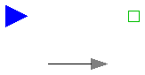
The input signal "a" in [m/s2] of connector "i" moves the 1D translational flange connector flange_b with a predefined acceleration, i.e., the flange is forced to move with this acceleration. The velocity and the position of the flange are also predefined and are determined by integration of the acceleration.
The acceleration "a(t)" can be provided from one of the signal generator blocks of the block library Modelica.Blocks.Source.
Release Notes:
| Name | Default | Description |
|---|---|---|
| s_start | 0 | Start position [m] |
| v_start | 0 | Start velocity [m/s] |
model Accelerate
"Forced movement of a flange according to an acceleration signal"
parameter SI.Position s_start=0 "Start position";
parameter SI.Velocity v_start=0 "Start velocity";
SI.Acceleration a "absolute acceleration of flange_b";
SI.Velocity v(final start=v_start, final fixed=true)
"absolute velocity of flange_b";
SI.Position s(final start=s_start, final fixed=true)
"absolute position of flange_b";
Modelica.Blocks.Interfaces.InPort inPort(final n=1)
"Connector of input signal used as force";
Interfaces.Flange_b flange_b;
equation
s = flange_b.s;
v = der(s);
a = der(v);
a = inPort.signal[1];
end Accelerate;

Flange flange_b is forced to move with a predefined motion according to the input signals:
inPort.signal[1]: position of flange
inPort.signal[2]: velocity of flange
inPort.signal[3]: acceleration of flange
The user has to guarantee that the input signals are consistent to each other, i.e., that inPort.signal[2] is the derivative of inPort.signal[1] and that inPort.signal[3] is the derivative of inPort.signal[2]. There are, however, also applications where by purpose these conditions do not hold. For example, if only the position dependent terms of a mechanical system shall be calculated, one may provide position = position(t) and set the velocity and the acceleration to zero.
The input signals can be provided from one of the signal generator blocks of the block library Modelica.Blocks.Sources.
Note, this model utilizes the non-standard function constrain(..) and assumes that this function is supported by the Modelica translator:
Real r[:], rd[:], rdd[:];
...
r = ..
rd = ...
rdd = ...
constrain(r,rd,rdd);
where r, rd and rdd are variables which need to be computed somewhere else. A simple implementation of constrain() is:
r = 0;
However, this implementation requires that r(t) is given as analytical, smooth function in order that it can be differentiated and it does not allow applications such as the one sketched above. Function constrain() is used to explicitly inform the Modelica translator that rd is the derivative of r and rdd is the derivative of rd and that all derivatives need to be identical to zero. The Modelica translator can utilize this information to use rd and rdd whenever the Pantelides algorithm requires to compute the derivatives of r (and takes rd and rdd instead of actually differentiating r).
Release Notes:
model Move "Forced movement of a flange according to a position, velocity and acceleration signal" SI.Position s "absolute position of flange_b"; SI.Velocity v "absolute velocity of flange_b"; SI.Acceleration a "absolute acceleration of flange_b"; protected Real constraintResidue; Real constraintResidue_d; Real constraintResidue_dd; public Modelica.Blocks.Interfaces.InPort inPort(final n=3); Interfaces.Flange_b flange_b; equation s = flange_b.s; v = der(s); a = der(v); constraintResidue = inPort.signal[1] - s; constraintResidue_d = inPort.signal[2] - v; constraintResidue_dd = inPort.signal[3] - a; constrain(constraintResidue, constraintResidue_d, constraintResidue_dd); end Move;
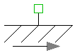
The flange of a 1D translational mechanical system fixed at an position s0 in the housing. May be used:
Release Notes:
| Name | Default | Description |
|---|---|---|
| s0 | 0 | fixed offset position of housing [m] |
model Fixed "Fixed flange" parameter SI.Position s0=0 "fixed offset position of housing"; Interfaces.Flange_b flange_b; equation flange_b.s = s0; end Fixed;
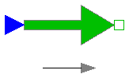
The input signal "s" in [N] characterizes an external force which acts (with positive sign) at a flange, i.e., the component connected to the flange is driven by force f.
Input signal s can be provided from one of the signal generator blocks of Modelica.Blocks.Source.
Release Notes:
model Force
"External force acting on a drive train element as input signal"
SI.Force f "driving force";
Interfaces.Flange_b flange_b;
Modelica.Blocks.Interfaces.InPort inPort(final n=1)
"Connector of input signal used as force";
equation
f = inPort.signal[1];
flange_b.f = -f;
end Force;
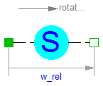
Usually, the absolute position and the absolute velocity of Modelica.Mechanics.Translational.Inertia models are used as state variables. In some circumstances, relative quantities are better suited, e.g., because it may be easier to supply initial values. In such cases, model RelativeStates allows the definition of state variables in the following way:
An example is given in the next figure
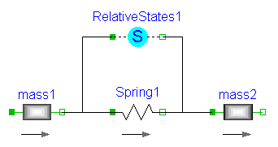Here, the relative position and the relative velocity between the two masses are used as state variables. Additionally, the simulator selects either the absolute position and absolute velocity of model mass1 or of model mass2 as state variables.
Release Notes:
model RelativeStates "Definition of relative state variables"
extends Interfaces.TwoFlanges;
SI.Position s_rel(stateSelect=StateSelect.prefer)
"relative position used as state variable";
SI.Velocity v_rel(stateSelect=StateSelect.prefer)
"relative velocity used as state variable";
SI.Acceleration a_rel "relative angular acceleration";
equation
s_rel = flange_b.s - flange_a.s;
v_rel = der(s_rel);
a_rel = der(v_rel);
flange_a.f = 0;
flange_b.f = 0;
end RelativeStates;